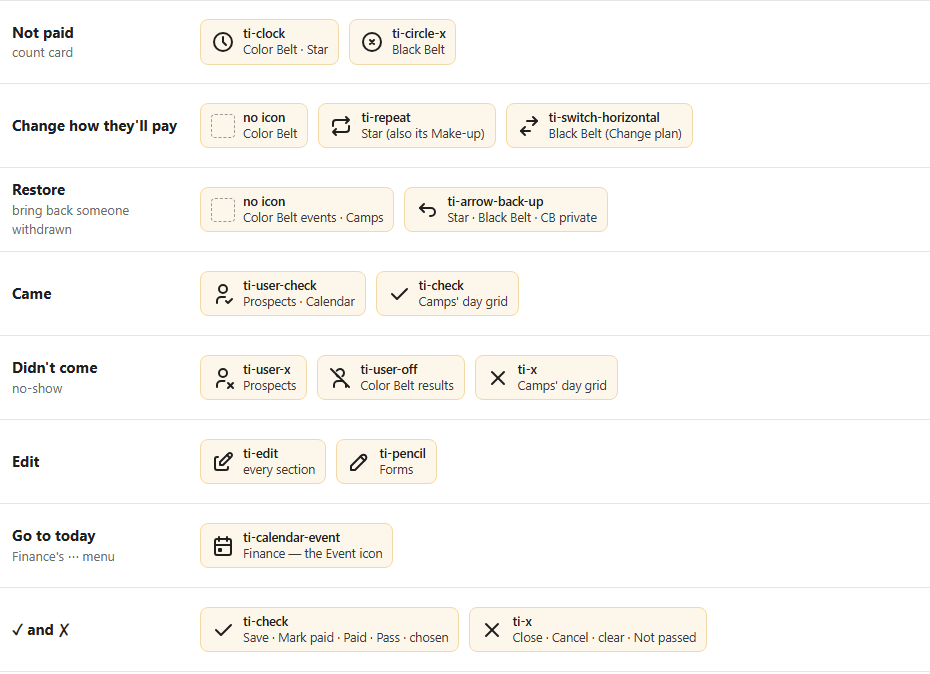
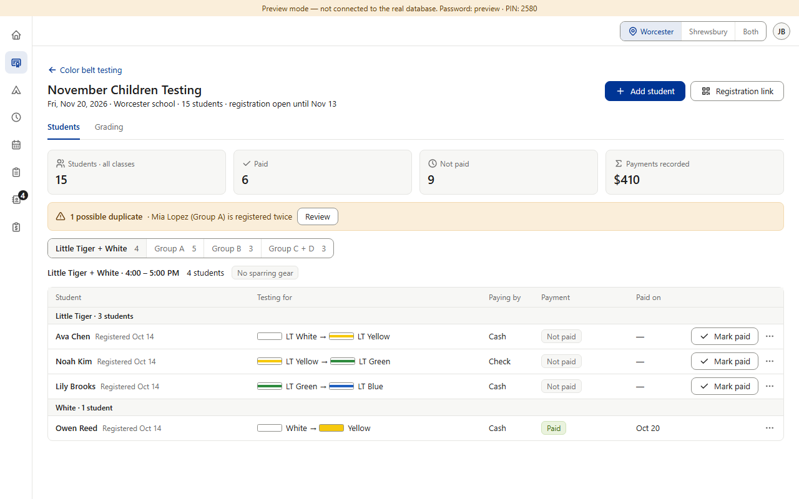
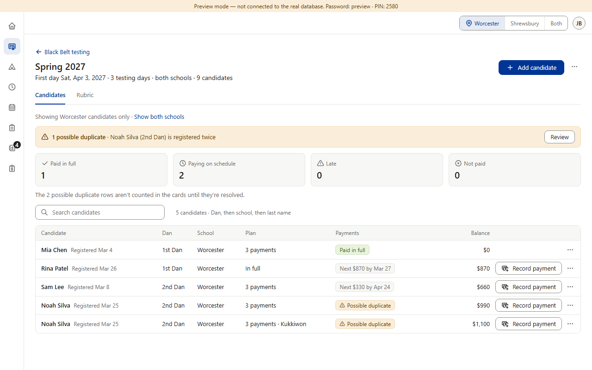
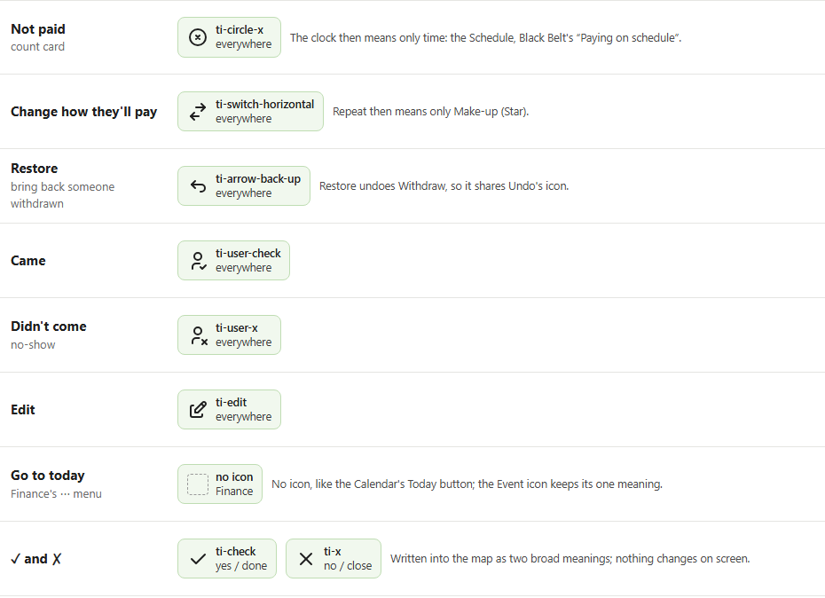

Approved in each section, plus drift. The rule (§2.3): “Same icon = same meaning everywhere … never use two icons for one meaning.” Today several meanings have two or three icons, and two icons mean two things: the clock is “Not paid” in Color Belt and Star but “Paying on schedule” in Black Belt (both are rows in the icon map, v0.229 and v0.914; v0.229 also names Camps, which never built that card), and Star's repeat icon is both “Make-up” and “Change how they'll pay”. Forms' pencil and Finance's “Today” icon were never decided (drift). Already settled: 12b removed Black Belt's lock icons and Forms' door icons. Next, 16b: icons missing from the map, Forms' own icons, and tooltips on icon-only buttons. (Icons drawn from the app's own Tabler set; cards are preview screenshots at PC size · fake data)



